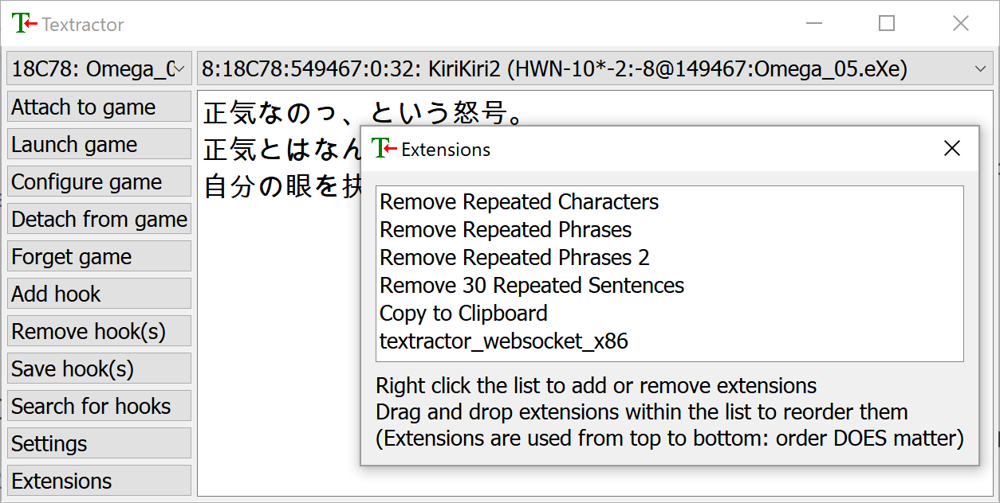
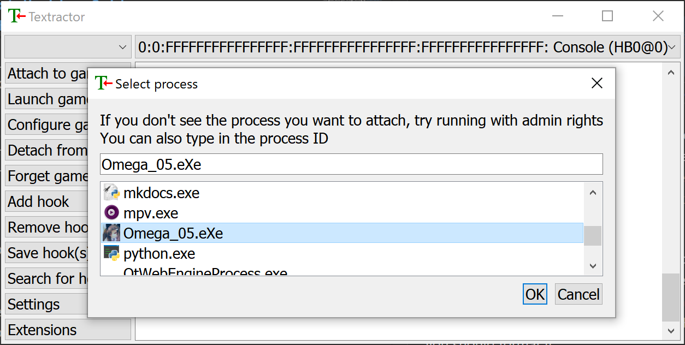
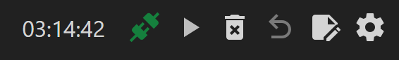

Textractor Guide¶
This guide walks you through setting up Textractor and connecting it to a browser-based UI using the WebSocket extension. Ideal for reading and mining from Japanese visual novels using Yomitan in your browser.
Requirements¶
Step 1: Set Up Textractor¶
- Download Textractor from Chenx221's GitHub. (On the releases tab, you will find a list of files that go texthook_xxxxxx.7z. Get the newest one listed as "Textractor (仅英语)")
- Extract the
.zipfile. - You will see two folders:
x86andx64. These correspond to 32-bit and 64-bit versions of Textractor.- Use
x86for most games. - Use
x64for modern visual novels that don't work with the x86 version.
- Use
Step 2: Install the WebSocket Extension¶
Download the WebSocket extension from the Releases page of the kuroahna/textractor_websocket repository.
File Setup¶
- Unzip the release package.
- Copy
textractor_websocket_x86.dllinto yourTextractor/x86folder. - Copy
textractor_websocket_x64.dllinto yourTextractor/x64folder.
Add Extensions to Textractor¶
For x86:¶
- Open
Textractor/x86/Textractor.exe - Click the Extensions button (left sidebar).
- Right-click in the Extensions window → Add Extension
- In the file picker:
- Change the file type to
*.dll - Select
textractor_websocket_x86.dll
For x64:¶
- Open
Textractor/x64/Textractor.exe - Repeat the same steps above using
textractor_websocket_x64.dll
Tip: You can remove any unhelpful extensions (like extra new lines) from your Extensions list. My settings are provided below for reference.

Step 3: Hook the Visual Novel¶
- Launch your visual novel and get to a point where you can start loading text.
- Open the matching version of Textractor (
x86orx64) based on your game. - In Textractor, click "Attach to game" in the top-left to open the process list.
-
Select the visual novel’s process.
🛠 If the game doesn’t appear in the list, try running Textractor as Administrator.
-
Advance the VN by a few lines to generate text for Textractor to capture.
- Use the top dropdown in Textractor (where it says "Console") and press up and down to cycle through the hooks.
- Find a hook that accurately reflects the game's text.

If textractor can't automatically find a working hook, you can try searching manually by selecting "Search for hooks" or checking the discussion tab of the game's VNDB page to see if anyone has listed a working hook code.
Step 4: View Text in the Browser¶
- Open Renji-XD’s Texthooker UI in your browser. If the WebSocket is working, the colored icon in the top right should be green. If it's still red, trying clicking on it to reconnect.
- Click the Start button in the top-right corner. (Or enable "Allow new Line during Pause" and "Autostart Timer by Line during Pause" in the settings.)
- Once Textractor is hooked and sending text, the UI will display it in real time.
-
The WebSocket server will be automatically started by Textractor at:
ws://localhost:6677
This allows the texthooker UI to receive text directly from Textractor using the WebSocket extension.

Additional Tips¶
- Keep both
x86andx64folders ready — the version depends on the VN. - Some games may not hook correctly if you set Textractor to automatically use a saved hook. Try restarting the game or clicking "Forget game".
- If you don’t see text in the UI, check that:
- The WebSocket extension is installed correctly.
- Textractor is actually hooked to the VN.
- You're using a supported browser (Chrome, Firefox, Brave etc.).
- Your firewall settings and browser extensions aren't blocking the WebSocket connection.